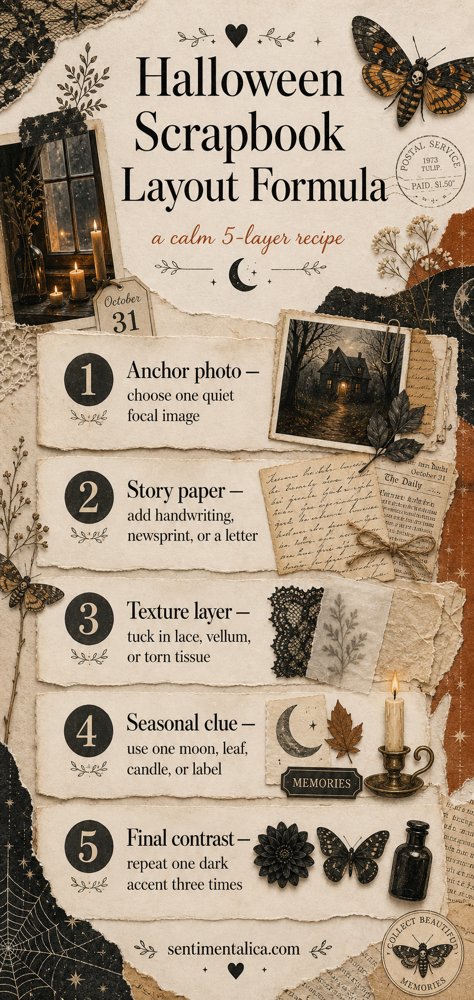

A Halloween scrapbook page can feel seasonal without becoming a field of stickers. The strongest pages usually have one clear photograph, a little evidence of the day, and just enough darkness to change the mood. This five-layer formula keeps the memory visible while letting October atmosphere settle around it.

Choose one anchor photograph
Begin with the image that carries the memory: a porch after dark, costumes waiting on a chair, a woodland walk, or the first carved pumpkin. Print it larger than the supporting pieces. If every photograph is the same size, the eye has no reason to pause.
Place the anchor slightly away from the exact centre. Leave one calm margin beside it for journaling. A narrow cream border can separate a dark photograph from patterned paper and make the whole composition easier to read.
Add paper that tells part of the story
Use handwriting, newsprint, an old letter, a map, or a photocopied book page as the story paper. It should support the photograph rather than compete with it. Tear one edge and keep another edge straight so the layers do not all have the same rhythm.
Include one real piece from the day if possible: a ticket, sweet wrapper, shop label, leaf rubbing, or a child's handwritten note. Small evidence makes a scrapbook feel lived in.
Build texture with restraint
Choose one tactile material: lace, vellum, tissue, gauze, thread, or a thin fabric scrap. Use it under the photograph or along one edge, not everywhere. Texture is most effective when it creates a contrast with a flatter paper surface.

Repeat one seasonal clue
Select a moon, leaf, candle, moth, key, or label and repeat its shape two or three times at different scales. Repetition makes mixed papers look intentional. Avoid introducing a new motif in every corner.
For colour, use one dark anchor such as ink black or aubergine, one warm paper neutral, and one restrained accent such as rust or antique brass. Repeat the dark tone in three small places. This creates a visual triangle around the memory.
Finish with words, not more decoration
Write the date, place, and one sensory detail: what the air smelled like, which sound carried down the street, or what someone said. If there is room, add a short reflection on why the moment mattered. Then stop.
For a page with several small photographs, group them as one block instead of scattering them into every corner. Keep equal gaps between the pictures, then let the journal card overlap the block slightly. The grouping reads as a single supporting element and leaves enough open paper for the seasonal layers to breathe.
A useful final check is to cover the embellishments with your hand. If the photograph and story already work, return only the details that guide the eye. The page should preserve Halloween as you experienced it, not perform every symbol associated with the season.
Browse more composition ideas in the Sentimentalica journal archive.